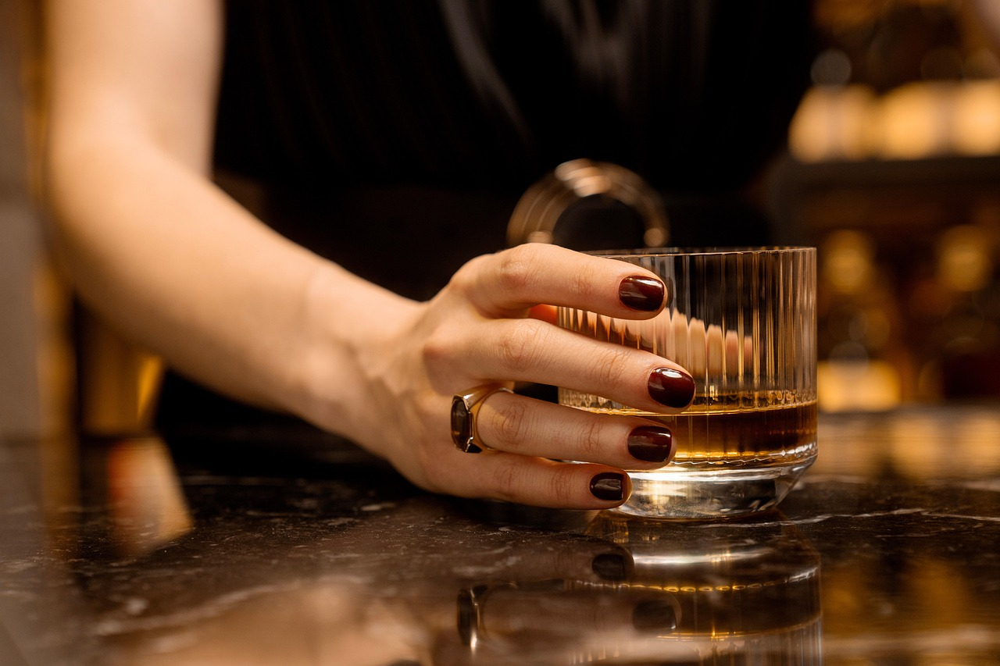
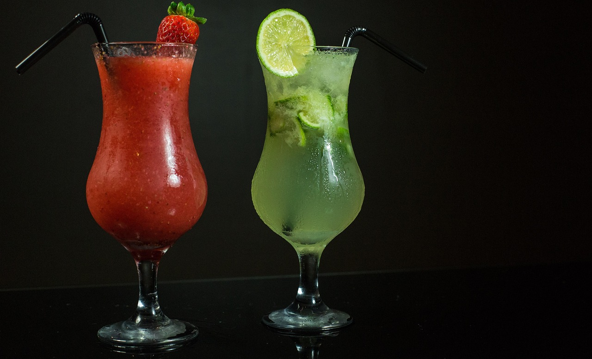

Ota
Locul din Cotroceni pentru supe și relaxare
Strada Doctor Nicolae D. Staicovici 26, București
Despre Ota
Ota este barul din Cotroceni unde găsești supe gustoase și băuturi diverse.
Locul perfect pentru a te relaxa după o zi plină sau pentru o întâlnire cu prietenii.
Suntem aici pentru cei care caută un spațiu cu personalitate și gust.

-
Cotroceni
Ne găsești în inima cartierului
-
Supe savuroase
Servim zilnic supe delicioase
-
Atmosferă relaxantă
Ideal pentru întâlniri cu prietenii
Meniu
Supe calde și băuturi de bar, de la un pahar de vin la un cocktail.
Galerie


